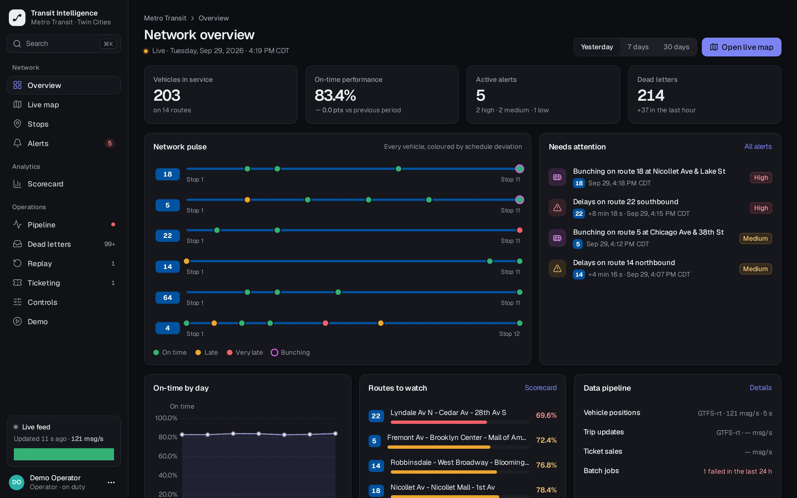
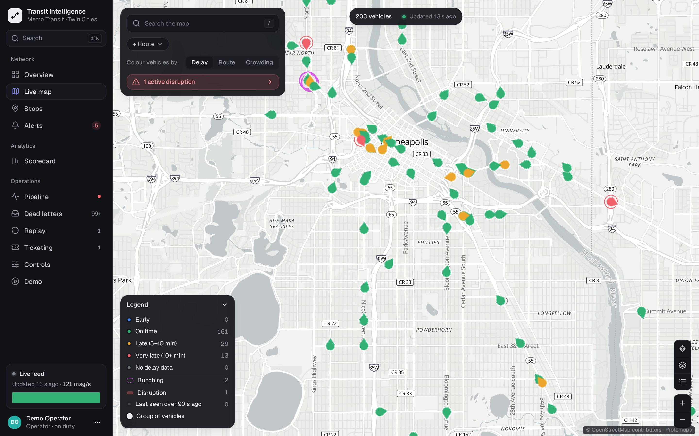
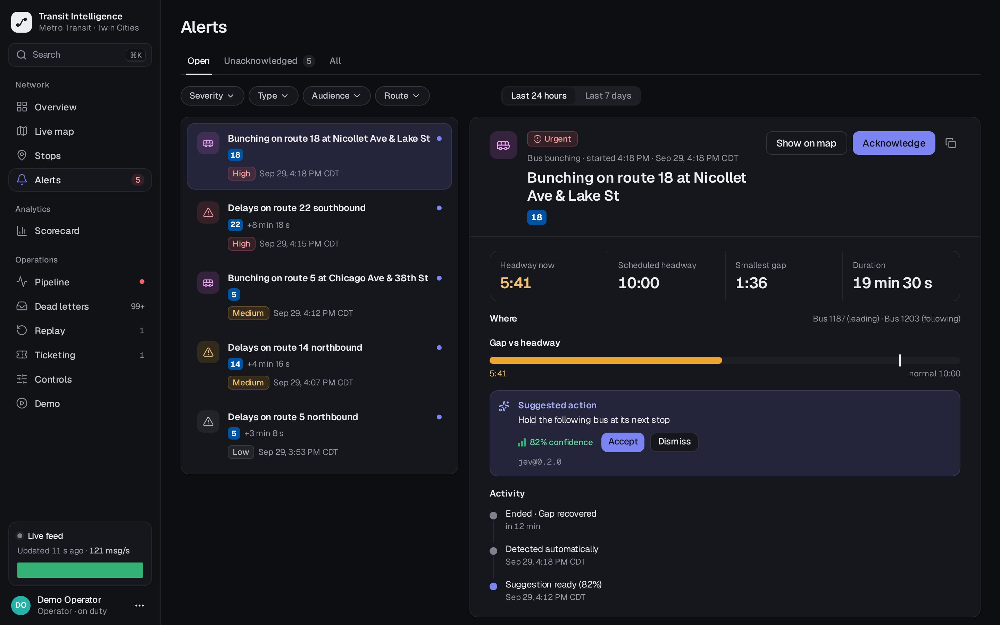
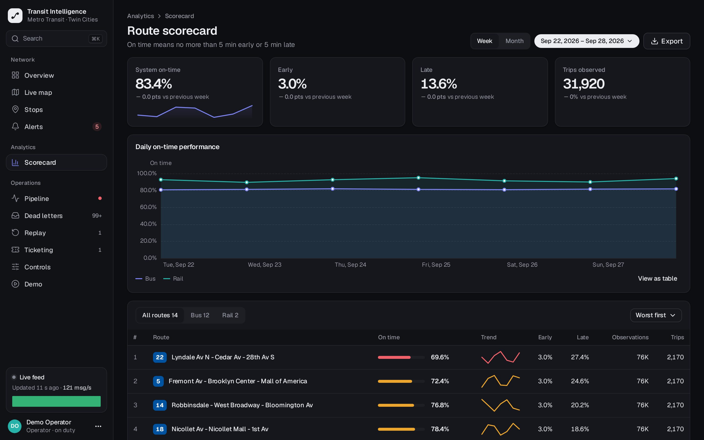
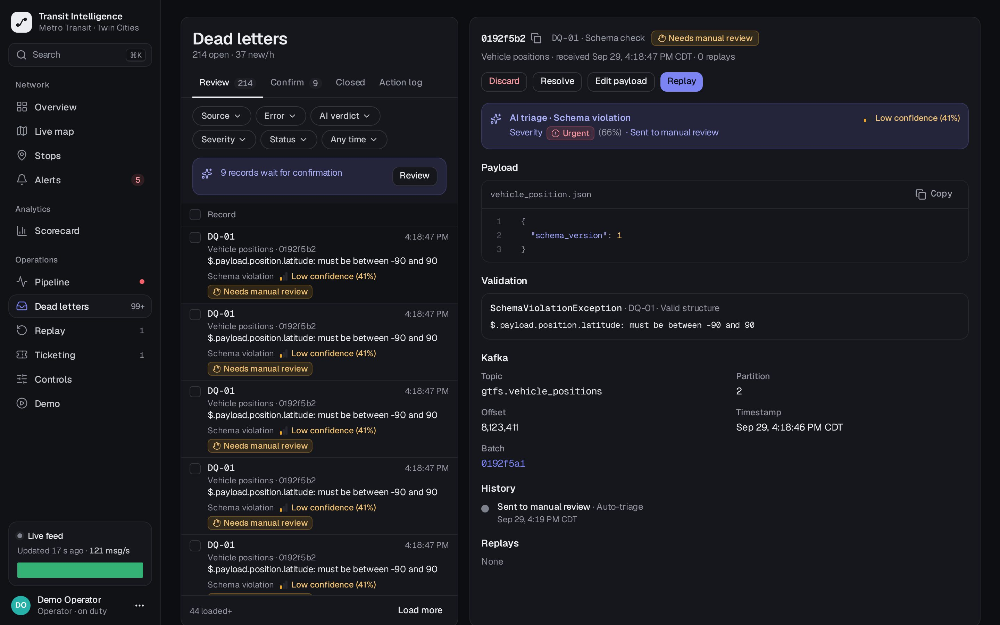

See your whole network live, on data you can actually trust.
PTI unifies schedules, live vehicle positions and ticketing into one reliable data platform, then turns it into real-time alerts and performance insight for your operations team.
Works with GTFS, GTFS-realtime and your ticketing database. No changes to the systems you already run.

Measured in PTI's fault-injection test suite: crash recovery, message redelivery and corrupted-input runs.
Transit networks produce data every second. Most teams can't trust it.
Schedules, vehicle trackers and ticketing systems were never built to work together. The result is a control room that reacts late and reports that disagree with each other.
Problems are found after passengers feel them
Bunched buses and service gaps surface through complaints or end-of-day reports, long after a dispatcher could have acted.
Bad data silently breaks good data
One malformed feed stops a nightly job. Retries create duplicates. Outages leave gaps nobody notices until the numbers look wrong.
Plan and reality live in different systems
Comparing the timetable with what actually ran means stitching exports together by hand, so on-time performance is measured monthly, not daily.
One platform from raw feed to the dispatcher's next move.
These are real PTI screens running on the public Metro Transit (Minneapolis–St. Paul) network. Pick a feature to see it.
Every vehicle, colour-coded by how late it is.
A live map of the whole network on offline vector tiles. Problems stand out at a glance instead of hiding in a table.
- Delay, route or crowding colouring with one click.
- Bunching and disruptions highlighted directly on the map.
- Pushed to the browser as positions arrive, no refresh.
- Search any route, stop or vehicle instantly.

Alerts that arrive with a suggested fix.
PTI detects bus bunching and service disruptions automatically, explains what is happening and recommends what to do next.
- Bunching detection against each route's scheduled headway.
- Disruption detection when delays break from the normal pattern.
- Suggested actions such as holding the following bus, with a confidence score.
- Acknowledge and track every alert from detection to recovery.

Know which routes run on time, every day.
Every trip is compared with the timetable automatically, so on-time performance is a daily number, not a monthly spreadsheet.
- Route scorecard ranking the network from worst to best.
- Daily trends by mode, route, stop and hour.
- Delay heatmaps and stop profiles that show where lateness builds up.
- Export for board reports and operator contracts.

Bad records are quarantined, never lost.
Every record is validated on the way in. Invalid ones go to a review queue with the exact reason, while everything else keeps flowing.
- Clear validation errors down to the field that failed.
- Edit and replay a record in one action, without creating duplicates.
- AI triage classifies and prioritises records for review.
- Full lineage back to the source message and batch.

Demo environment with Metro Transit public GTFS data. Click any screenshot to enlarge.
Network overview
Vehicles, on-time rate, alerts and pipeline health on one screen.
Stop arrivals
Predicted arrivals per stop, learned from your own running times.
Ticketing anomalies
Unusual refunds and sales spikes flagged next to service data.
Pipeline console
Throughput, stage health, job runs, restart, stop and replay.
Most dashboards assume the data is right. PTI proves it.
Reliability is engineered into the platform and verified by deliberately breaking it: killed processes, redelivered messages, corrupted input and full rebuilds.
No loss, no duplicates
Every record is written exactly once, even when a server crashes mid-load or the network delivers a message twice.
Real-time and batch, one platform
Live positions and nightly schedule loads share one validated pipeline, so live and historical numbers always agree.
Rebuild from history any time
Every raw event is archived. Fix a rule, then recompute the whole warehouse from source with matching checksums.
Open standards, no lock-in
GTFS, GTFS-realtime and change data capture. PTI plugs into your AVL and ticketing systems instead of replacing them.
Your data stays with you
Self-hosted on-premise or in your private cloud, with single sign-on and role-based access.
AI-assisted operations Expanding
Triage of bad records, anomaly classification and dispatch suggestions, always with a confidence score and a human in the loop.
From your feeds to live insight in four steps.
Connect your sources
Point PTI at your timetable, vehicle feed and ticketing database. Nothing changes in those systems.
Validate and load
Every record is checked, deduplicated and written once. Anything invalid is quarantined with its reason.
Analyse in real time
Bunching, disruptions, arrival predictions and on-time performance are computed as data arrives.
Act and recover
Dispatchers work from the live map and alerts; data teams fix and replay from the ops console.
Built for the people who keep a network moving.
If one of these sounds like you, we'd like to talk.
Transit operators & agencies
Operations control, dispatchYou run buses, trams or metro and need to see problems while they are happening, not in tomorrow's report.
You get: a live network view, automatic bunching and disruption alerts, and daily on-time performance.
Planners & transport authorities
Planning, performance, operator contractsYou set service levels, assess operators or redesign routes and need evidence that holds up to scrutiny.
You get: route scorecards, delay heatmaps and ridership signals from one trusted dataset.
Data & IT teams
Data engineering, platformYou maintain the pipelines behind transit reporting and spend too much time on reruns, duplicates and silent gaps.
You get: a fault-tolerant pipeline with quarantine, replay, lineage and full observability.
Smart-city programmes & integrators
Solution partnersYou deliver mobility platforms for cities and need a reliable transit data core that integrates through open standards.
You get: a deployable platform with a documented REST API and a real-time event stream.
Start small. See results on your own network.
Choose how you want to get started. Every option begins with a short call to understand your network and data.
Live demo
See PTI in action with a guided walkthrough.
- Guided tour of every screen
- Live failure and recovery demonstration
- Q&A with the engineering team
Trial on your data
PTI running on your own GTFS feed and routes.
- Your network, stops and timetable loaded
- Live map and alerts from your real-time feed
- On-time scorecard for your routes
- Onboarding session for your team
Pilot & deployment
Production rollout in your environment.
- On-premise or private cloud install
- Integration with AVL, ticketing and SSO
- Custom alerts, KPIs and reports
- Support and service-level agreement
Questions we often hear.
What data do we need to get started?
A GTFS timetable is enough to start. Add a GTFS-realtime vehicle position feed for the live map and alerts, and read access to your ticketing database for ridership insight.
Does PTI replace our AVL or ticketing systems?
No. PTI reads from the systems you already run through open standards and change data capture. Nothing in those systems has to change.
Where is PTI hosted, and who owns the data?
Trials can be hosted by NIGB. Production deployments run on-premise or in your private cloud, so your data stays in your environment and remains yours.
How is "no data loss" actually verified?
PTI ships with a fault-injection test suite that kills processes mid-load, redelivers messages, injects corrupted records and rebuilds the warehouse from the raw archive, then checks that nothing was lost or duplicated.
Can PTI connect to our existing BI tools?
Yes. The warehouse is standard PostgreSQL, and a documented REST API and real-time event stream are available for other systems.
See PTI running on your own network.
Tell us a little about your network. We'll reply with a time for a demo or the next steps for a trial.
- You operate public transport and want real-time visibility of your network.
- You are responsible for service quality, KPIs or operator performance.
- You are tired of broken or duplicated transit data in your reports.
- You are building a smart-mobility platform and need a reliable data core.